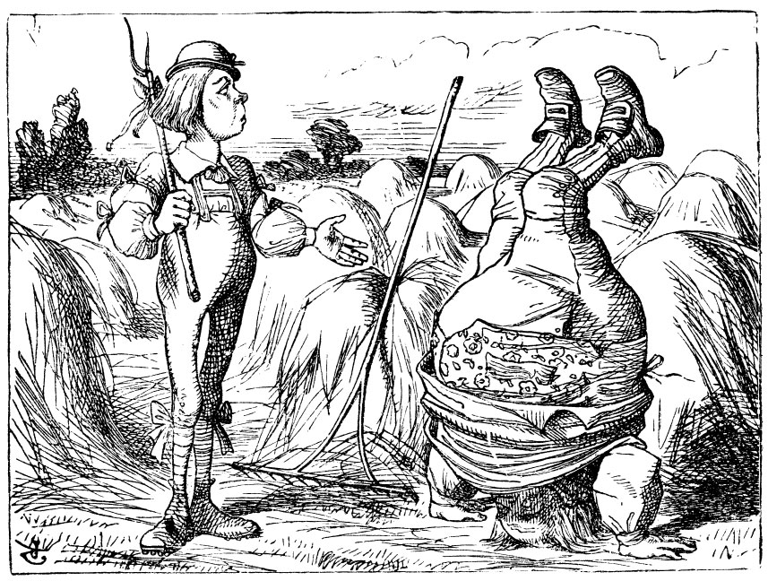
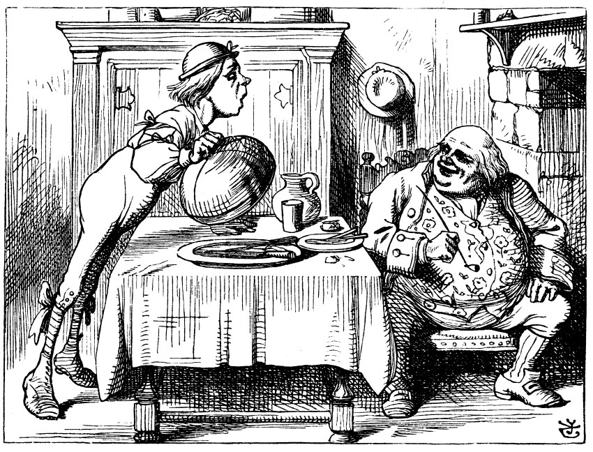
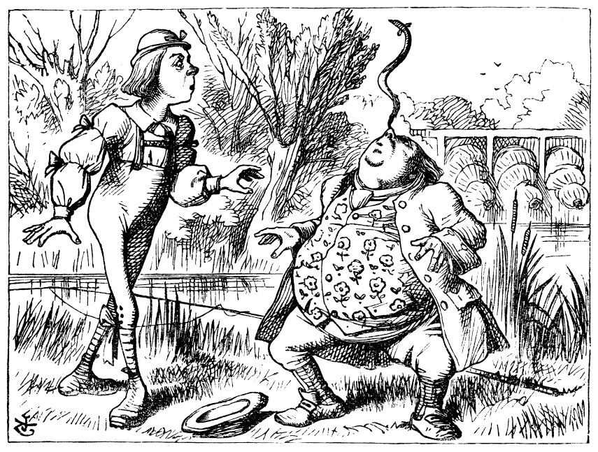

Tırtıl’la Alice sessizlik içinde bir süre bakıştılar; neden sonra Tırtıl, nargilesinin marpucunu ağzından çıkarıp, cansız, uykulu bir sesle Alice’e “Kimsin sen?” diye sordu.
Bu soru, sohbete koyulmak için çok da cesaret verici bir başlangıç değildi. Alice, oldukça mahcup bir tavırla şöyle dedi: “Şey efendim, yani aslında şu an tam bilmiyorum. En azından bu sabah kalktığımda kim olduğumu biliyordum, ama o zamandan beri birkaç kez değiştim galiba.”
“Ne demek istiyorsun?” dedi Tırtıl sert bir tavırla. “Kendinden söz et, bakalım.”
“Kendimden söz edemem, efendim,” dedi Alice, “çünkü ben ben değilim ki, anlatabiliyor muyum?”
“Anlatamıyorsun,” dedi Tırtıl.
“Özür dilerim, ama daha fazla açıklayamayacağım,” diye yanıt verdi Alice kibarca, “çünkü kendim bile anlamıyorum ki bu durumu; bir gün içinde bu kadar farklı boylarda olmak insanın kafasını allak bullak ediyor.”
“Etmez,” dedi Tırtıl.
“Pekala, size henüz öyle gelmiyor olabilir,” dedi Alice, “ama düşünün ki önce bir krizalite -hani bir gün dönüşeceksiniz ya-sonra da bir kelebeğe dönüşmek zorunda kaldığınızda, sanırım kendinizi biraz tuhaf hissedersiniz, öyle değil mi?”
“Hiç de hissetmem,” dedi Tırtıl.
“Peki, belki sizin duygularınız farklı olabilir,” dedi Alice, “tek bildiğim, bunların bende tuhaflık yarattığı.”
“Sen!” dedi, Tırtıl tepeden bakarak, “Kimsin sen?”
Bu soru her şeyi yeniden başa döndürmüştü. Alice, Tırtıl'ın böyle kısa ve keskin ifadelerinden rahatsız olmaya başlamıştı; gururla, dimdik doğrulup, ciddi bir ifade takınarak, “Sanırım, ilk önce siz bana kim olduğunuzu söylemelisiniz,” dedi.
“Neden?” diye sordu Tırtıl.
İnsanın kafasını allak bullak eden bir soru daha. Alice buna akla yatkın bir yanıt bulamadığından, üstelik Tırtıl’ın ruhsal durumu pek hoşuna gitmediğinden, oradan uzaklaştı.
“Geri dön,” dedi Tırtıl, Alice’in ardından. “Sana söyleyecek önemli şeylerim var.”
Bu sözler, doğrusu insanda umut uyandırıyor gibiydi. Dönüp geri geldi.
“Öfkene hakim ol,” dedi Tırtıl.
“Hepsi bu mu?” dedi Alice, elinden geldiğince kızgınlığını sineye çekerek.
“Hayır,” dedi Tırtıl.
Alice nasılsa yapacak başka işim yok, bekleyeyim bari, diye düşündü, hem belki duymaya değer bir şeyler de söyleyebilirdi. Tırtıl bir süre öylece durup nargilesini tokurdattı, sonra nihayet kollarını çözüp nargilesinin marpucunu ağzından çıkartarak, “Demek, değiştiğini sanıyorsun, öyle mi?” dedi.
“Maalesef ki, öyle efendim,” diye yanıt verdi Alice. “Önceden bildiğim şeylerin hiçbirini anımsamıyorum... ve on dakika aynı boyda kalmıyorum!”
“Nedir anımsayamadıkların?” dedi Tırtıl.
“Örneğin, ‘Küçük Çalışkan Arı’ şiirini bir okuyayım dedim, ama ağzımdan bambaşka sözler çıktı!” diye yanıtladı Alice hüzünlü bir ses tonuyla.
‘“Kocadın Sen William Baba’ şiirini tekrarla bakalım,” dedi Tırtıl.
Alice ellerini birbirine kavuşturarak başladı okumaya...
“‘William Baba,’ dedi genç adam, ‘artık kocadın Bembeyaz oldu saçın baksana
Gel gör ki hep böyle baş aşağısın Yakışır mı bu senin yaşındaki adama?’

‘Gençliğimde,’ dedi William Baba oğluna
Durmazdım böyle beynime gelir diye zarar
Ama şimdi eminim bende beyin olmadığına
Kalkarım o yüzden amuda tekrar tekrar.’
‘Kocadın,’ dedi delikanlı, ‘söyledim ya demin de
Bir de şişmanladın iyiden iyiye
Yine de ters takla attın demin kapıda
Yalvarırım bunun hikmetini söyle.’
‘Gençliğimde,’ dedi bilge, sallayarak akça buklelerini,
‘Esnek tuttum bütün eklemlerimi
Şu merhem sayesinde -kutusu bir şilin—
Satayım sana iki kutu, olursa iznin.'
‘Kocadın,’ dedi delikanlı ‘içyağından başkasına
Yetmez haliyle çenenin kuvveti
Oysa silip süpürdün kazı kemiğiyle gagasıyla
Yalvarırım söyle, nedir bunun hikmeti?'
‘Geçtiğimde,’ dedi baba, ‘merak saldım hukuka
Her bir davayı da tartıştım karımla
İşte buradan geldi bu kas gücü çeneme
Sürüp gitti böylece ömrüm boyunca.’
‘Kocadın,’ dedi delikanlı, ‘geçirmez kimse aklından
Eskisi kadar sağlam olduğunu gözlerinin
Öyleyken düşürmedin yılanbalığını burnunun ucundan
Yalvarırım söyle nedir sırrı bu müthiş hünerinin?’
‘Yeter artık,’ dedi baba, ‘yanıtladım üç sorunu,
Burnun kalkmasın sakın bir karış havaya!
Dinler miyim sanıyorsun bütün gün bu laf kalabalığını
Kaybol, yoksa yersin tekmemi, bulursun kendini alt katta!”’
“Böyle değildi,’’ dedi Tırtıl.
“Evet, korkarım, pek böyle değildi,” dedi Alice utana sıkıla,
“bazı sözler karıştı.”


“Baştan sona yanlış,” dedi Tırtıl, kesin bir edayla, ardından birkaç dakika ikisi de ses çıkarmadı.
Sonra söze ilk başlayan Tırtıl oldu.
“Hangi boyda olmak istiyorsun?”
“Boy konusunda öyle titiz değilim,” diye yanıtladı Alice aceleyle, “sadece boyumun sürekli uzayıp kısalmasından hoşnut değilim, anlarsınız ya!”
“Anlamıyorum,” dedi Tırtıl.
Alice hiç cevap vermedi; hayatında hiç bu denli zıddına gidilmemişti, artık öfkelenmeye başlamıştı.
“Şimdiki boyundan memnun musun?” dedi Tırtıl.
“Eğer sakıncası yoksa biraz daha uzamak isterdim, efendim,” dedi Alice. “Sekiz santim boyunda olmak öyle acınası bir şey ki.”
“Aslına bakarsan, çok da iyi bir boy,” dedi Tırtıl, oturduğu yerden öfkeyle doğrularak (kendisi de tam tamına sekiz santimdi).
“Fakat ben bu boya alışkın değilim!” diye savundu zavallı Alice kendini, acıklı bir ses tonuyla. Sonra da, “Şu yaratıklar keşke bu denli çabuk gücenmeseler!” dedi kendi kendine.
“Zamanla alışırsın,” dedi Tırtıl ve nargilesinin marpucunu ağzına alıp, tokurdatmaya koyuldu yeniden.
Alice bu sefer Tırtıl yeniden konuşmaya başlayıncaya değin sabırla bekledi onu. Derken Tırtıl, marpucu ağzından çıkarıp iki üç kez esneyip silkindi. Ardından da mantardan aşağıya inip otların arasından sürüne sürüne giderken, “Bir kenarı boyunu uzatacak, öteki kenarı da kısaltacak,” diyordu sadece.
“Neyin bir kenarı? Neyin öteki kenarı,” diye geçirdi aklından Alice.
“Mantarın,” dedi Tırtıl, sanki Alice bunları yüksek sesle sûrmuşçasına, sonra da gözden kayboldu.
Alice düşünceli düşünceli mantara bakıp iki kenarın neresi olabileceğini anlamaya çalışarak öylece kalakaldı; mantar yusyuvarlak olduğundan, bunun yanıtını bulmak Alice için oldukça zordu. Yine de, sonunda, kollarının erişebildiği oranda mantarı kucaklayarak iki tarafından iki eliyle birer parça kopardı.
“Şimdi bunların hangisi hangisi?” dedi Alice kendi kendine ve olacakları görmek üzere sağ elindekinden minik bir parça ısırdı: Birden çenesinin altında korkunç bir darbe hissetti. Çenesi ayaklarına çarpmıştı!
Alice bu ani değişimden iyiden iyiye korkmuştu, fakat boyu hızla kısaldığından, kaybedecek hiç zamanı olmadığını anlayıp derhal öbür parçadan birazcık koparıp yemeye davrandı. Çenesi ayaklarına iyice dayanıp sıkıştığından, nerdeyse ağzını açacak yer kalmamıştı; nihayet ağzını açıp sol elindeki mantardan bir lokmacık yutabildi.
* * *
“Of be, sonunda kafam serbest kaldı,” dedi Alice neşe içinde, ama görünürlerde omuzları olmayınca, bu sevinç yerini dehşete bıraktı; aşağıya baktığında görebildiği tek şey, bir deniz gibi uzayıp giden yeşil yapraklar arasından tıpkı bir sap gibi yükselen uçsuz bucaksız bir boyun oldu.
“Bütün bu yeşi'lik de nedir böyle?” dedi Alice. “Omuzlarım nereye gitti? Zavallı minik ellerim, nasıl oluyor da sizi göremiyorum?” Bu sırada bir yandan da ellerini oynatıyordu, ama uzaklarda yeşil yaprakların hafif kımıldanışından öte bir şey olmuyordu.
Ellerini başına doğru kaldırma şansı pek olmayınca, kafasını ellerine doğru götürmeyi denedi; o zaman sevinç içinde bir de ne görsün: Kafasını tıpkı bir yılan gibi her bir yana kolayca çevirebiliyordu. Boynunu zarif bir zigzag hareketiyle aşağıya doğru eğerek yaprakların arasına daldığında, aslında bunların daha önce altında gezdiği ağaçların tepeleri dışında bir şey olmadığını anladı; tam o sırada keskin bir ıslık sesiyle birden geri çekildi. Kocaman bir güvercin Alice’in üstüne üstüne doğru uçup sert bir biçimde kanatlarıyla yüzüne yüzüne vuruyordu.
“Yılan!” diye haykırdı Güvercin.
“Ben yılan değilim,” dedi Alice, haksızlığa uğramış olmanın verdiği öfkeyle. “Çekil başımdan.”
“Tekrar söylüyorum, yılansın sen!” dedi yine Güvercin, ama bu kez sesi daha kontrollüydü, ardından hıçkırarak ekledi: “Her yolu denedim, ama hiçbir şey bunlara kâr etmiyor.”
“Ne söylüyorsun, hiçbir şey anlamıyorum,” dedi Alice.
“Ağaç kovuklarını mı denemedim, setleri mi dersin, yoksa çitleri mi,” diye devam ediyordu Güvercin, ona hiç aldırmadan, “ama şu yılanlar yok mu ya, bunlardan bir rahat yok!”
Alice'in şaşkınlığı gittikçe artıyordu, öte yandan Güvercin’in lafını bitirmeden ona bir şey söylemenin birfaydası olmadığını düşünüyordu.
“Sanki kuluçkaya yatmak az dertmiş gibi,” dedi Güvercin, “bir de gel gece gündüz yılanları gözetle! Üç gecedir gözüme bir damla uyku girmedi.”
Güvercin’in neden bahsettiğini sonunda anlamaya başlayan Alice, “Bu kadar rahatsız edilmenize gerçekten çok üzüldüm,” dedi.
“Tam da korudaki en uzun ağacın tepesine çıkmışken,” diye devam etti Güvercin feryat edercesine yüksek bir sesle, “ve nihayet onlardan tam da kurtuldum derken şimdi de gökten kıvrılarak inmezler mi! Ah, seni yılan!”
“Ama diyorum sana işte, ben yılan değilim!” dedi Alice. “Ben... Ben bir...”
“Peki, sen nesin?” dedi Güvercin. “Bak işte, bir şeyler uydurmaya çalışıyorsun!”
“Ben... Ben küçük bir kızım,” dedi Alice, o gün geçirdiği değişim sayısını anımsayıp söylediklerinden kendisi de kuşkulanarak.
“Pek akla yatkın bir hikâye doğrusu!” dedi Güvercin, küçümseyerek. “Ömrümde bir sürü kız gördüm, ama böyle boyunlusuyla karşılaşmadım hiç. Yok, yok! Sen bir yılansın, inkar etmeye kalkışma. Şimdi sen bana hayatında hiç yumurta yemediğini de söylersin!”
“Tabii ki yedim,” dedi, doğrucu bir çocuk olarak; “fakat biliyorsunuz ki yılanlar gibi küçük kızlar da yumurta yer.”
“İnanmıyorum buna,” dedi Güvercin, “ama eğer öyleyse, o zaman onlar da bir çeşit yılan, bütün söyleyeceğim bu.”
Bu Alice için öylesine yepyeni bir fikirdi ki, öylece kalakaldı bir iki dakika, bu fırsattan yararlanan Güvercin devam etti: “Sen yumurta arıyorsun, bunu çok iyi biliyorum; ister bir kız ol, isterse bir yılan; benim için ne fark eder ki?”
“Benim için çok fark eder,” dedi Alice aceleyle, “üstelik yumurta falan da aramıyorum, arasam bile şeninkini istemem: Yumurtayı çiğ hiç sevmem.”
“Öyleyse çek git buradan!” dedi Güvercin asık bir suratla ve yeniden yuvasına yerleşti. Alice ağaçların arasında ilerlerken olabildiğince çömeliyordu, çünkü boynu sürekli dallara dolaşıyor, o da durup çözmek zorunda kalıyordu. Bir süre sonra elinde mantardan kalan parçalar olduğunu anımsayarak, dikkatlice işe koyuldu; önce birinden sonra diğerinden ısırıp kah uzayıp kah kısalarak sonunda kendi boyuna gelmeyi başardı.
Kendi boyu civarında olmayalı öyle uzun zaman geçmişti ki, ilk başta yadırgar gibi oldu; ama birkaç dakikada buna da alışmaya ve her zamanki gibi kendi kendine konuşmaya başladı. “Neyse, planımın yarısı artık tamam! Ne kadar da şaşırtıcı tüm bu değişimler! Bir dakika sonra ne olacağımdan asla emin olamıyorum! Ama olsun, kendi boyuma geldim işte; bundan sonra artık iş o güzel bahçeye girebilmekte... Acaba nasıl yapmalı?”
Tam böyle derken birdenbire bir açıklığa geldi, içinde bir buçuk metreden alçak küçük bir ev vardı. “Burada her kim yaşıyorsa,” diye düşündü Alice, “bu boyla karşılarına çıkmasam iyi olur, yoksa korkudan ödleri patlar!” Böylece sağ elindeki mantardan bir lokmacık ısırdı ve boyu yirmi beş santimetreye ininceye değin eve yaklaşmaya kalkışmadı.